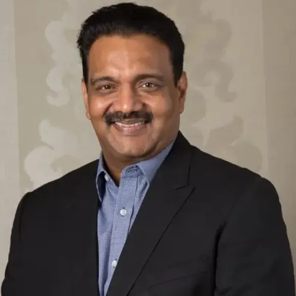

Home Chancellor

About Chancellor
Dr. A.S. Ganesan
Chancellor,
Vinayaka Mission’s Research Foundation (Deemed to be University)
Dr. A.S. Ganesan is the Chancellor of Vinayaka Mission’s Research Foundation (Deemed to be University) and is instrumental in the growth of the institution from its humble beginning since 1981 to VMRF-DU with over 15,000 students and more than 5000 employees today.
Dr. A.S. Ganesan completed his Medical Degree in 1992 from Madras Medical College and continued his higher education in medical and management at MMC, Chennai and Heidelberg University, Germany.
Since 1995, Dr. A.S. Ganesan has associated himself with the Founder Chairman Dr. A. Shanmugasundaram in establishing and developing medical colleges in Pondichery & Karaikal and an Engineering College in Chennai. He took up end-to-end responsibility of establishing and governing the institutions to offer multiple UG & PG programs.
Dr. A.S. Ganesan was instrumental in developing the campuses into Deemed to be University in 2001 through his administrative ability and vision to inspire the youth.
In 2013, Dr. A.S. Ganesan was appointed as the Chancellor by the Board of Trustees headed by the Founder Chancellor. He provides strategic guidance and leadership to the Vinayaka Mission’s Research Foundation (Deemed to be University) offering undergraduate and post graduate programmes in Medicine, Dentistry, Homeopathy, Pharmacy, Nursing, Paramedical, Engineering, Law, Management and other disciplines.
Under his leadership, VMRF-DU contributes to the medical and healthcare needs of society through its institutions and network of hospitals. VMRF-DU medical institutions are referral centers for neighboring hospitals and serve to alleviate health care problems of rural communities.
His vision and continuous focus is to uplift economically weaker sections of society living in rural areas through education, employment, health facilities, social and community development. He is a leader par excellence in higher education, well known for his commitment and advocacy for accessible high quality graduate and post graduate education for rural youth.
Dr. A.S. Ganesan is keen in promoting innovation, multi-disciplinary research, introducing socially relevant programs, skill development, industry affiliations and international collaborations. He received “Edupreneurs Award for Education Excellence” by Times of India in 2012 and 2014.
He is also the benefactor of innumerable health care programs, educational scholarships, youth welfare, women empowerment, green initiatives and community transformation across the globe.
Dr. A.S. Ganesan continues the philanthropic activities started by the Founder Chairman Dr. A. Shanmugasundaram including management of the magnificent “1008 Shivalaya Temples” in Salem which is also a part of Incredible India promoted by the Ministry of Tourism, Government of India and a landmark in the state of Tamil Nadu. Apart from this, several temples, community halls, buildings and lands have been donated for several charitable activities in Tamil Nadu and Puducherry.